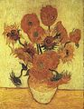

梵谷Van Gogh
梵谷Van Gogh
《自畫像》（Self-portrait as an artist），1887-88年，
收藏於梵谷博物館
《安特衛普的後院》（Backyards of Old Houses in Antwerp in the Snow），1885年，
收藏於梵谷博物館

《向日葵》（Sunflowers），1889年，
收藏於梵谷博物館
《羅納河上的星夜》（Starry Night Over the Rhone），1888年，
收藏於奧塞美術館
 《在亞爾的臥室》第三版（Vincent`s Bedroom in Arles），1889年，
收藏於奧塞美術館
《在亞爾的臥室》第三版（Vincent`s Bedroom in Arles），1889年，
收藏於奧塞美術館